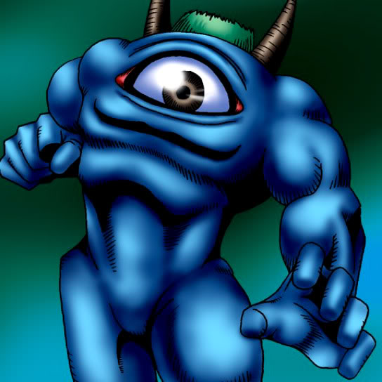

Hiro's Shadow Scout

Description: "When this card is flipped face-up, identifies an opponent's face-down card by type (MONSTER/MAGIC/POWER-UP/TRAP)."
STATS
ATK: 650
DEF: 500DECK COST
Deck Cost per Card: 17EFFECT NOT IMPLEMENTED
Fusion List (1 Possible Fusions)
- Hiro's Shadow Scout + Fungi of the Musk = Darkworld Thorns